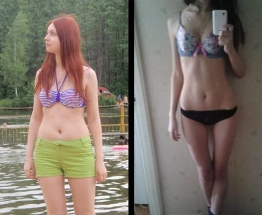

Hogyan FOGYTAM LE 36 kg-t 6 hónap alatt
Beküldve , 19:51 | Szerző: Amalia
Nagyjából 3 hetet vett igénybe a fogyási eljárás. Mielőtt fogyni kezdtem, természetesen felmentem a netre, több fórumot átolvastam, ahol elbeszélték ki és hogyan fogyott le 40 kg-ot. Nekik rengeteg albumuk van ebben a csoportban. És nem hiszed el, de eltöltve 3 órát a laptopomon, mér el is majszoltam egy fél doboz csokit, két csésze kávét és egy joghurtot. De kizárólagos módszert, hogy hogyan is fogyhatnák le emberkínzó diéták nélköl nem találtam. Valaki uborkával és zabkásával fogyott, valaki almával, és valaki fél évig ölte magát az edzőteremben és szerencsétlen 5 kg-tól szabadult meg. Nekem 10-12 kg-os eredmény kellett és maximum kettő hónap leforgása alatt.
Szóval, június 1.: súly 83 kg, magasság 175сm
Eldöntöttem, hogy egy hétig zabkásán és főtt csirkemellen fogok ülni. Olvastam, hogy az ilyen párosítás fogyást okoz elő.Eredmény : 2 napig bírtam. Ez szörnyű! Semmi változatosság, az íze meg undorító fűszerek meg szószok nélkül. Hányszor folyt a nyálam, mikor a melóból hazafelé menet elmentem egy pékség vagy étterem mellett, amelyekben annyi finom, illatos és változatos kaja gőzölgött...megértettem, hogy egy hetet se fogok kibírni zabkásán meg csirkemellen. Keressünk tovább.
június 3:
Valamit csinálnom kell! Valami oknál fogva újra 2 kilóval lettem nehezebb, emiatt idegeskedek és amikor ideges vagyok akkor mértéktelenül eszek! Változtattam az étrendemen, a zabkása maradt,de közben áttértem az almára és főtt tojásra. Na mit is mondjak, reggelire zabkását ettem banánnal, ebédre igyekeztem zöldség salátát és főtt tojást fogyasztani. 2 darabot. Több tojást nem bírok legyűrni.
június 6:
Ezalatt a három napos kínszenvedés-étrend alatt a bőröm elkezdett száradni, a hajam nem fénylett. Életkedvem nem volt, a számban meg valami rossz utóíz kerengett. Továbbá, valahol kiolvastam, hogy a főtt tojásban rengeteg a rossz koleszterin,
ami ártalmas az egészségre! Hogyan lehet ezeket enni ilyen mennyiségeben?
június 8:
Hát ezt meg tényleg nem vártam. Az egyik barátnőm meghívott az esküvőjére! A lakzi meg egy hónap múlva! Ja, csak említésképpen, a súlyom már 85 kg, csúnyának, semmire kellőnek és taszító hájpacninak érzem magam ! Gyorsan kell valamit tennem ezzel!!!
A laptopomon eltöltött napok alatt, amiket fogyási tippek keresésével töltöttem, ráj9ttem, hogy a diéta egyáltalán nem nekem való. Mindenütt írják, hogy utánuk beindul a jo-jo effektus és a kilók visszajönnek. A sport úgyszintén – egy hónap alatt akarok 12 kg-ot megszabadulni, de a mindennapos munka 9-20 óra között nem igazán segít ebben. Már épp leakartam mondani a meghívást, de épp maga a barátnőm hívott és nem tudtam visszatartani magam, könnyek közt elpanaszoltam neki a bánatom.
Csak említés képpen, észrevettem, hogy Mónika nagyon lefogyott, ő mindig is kövérke volt, most pedig S/M méretű ruhákat hord. Végighallgatva a sopánkodásomat, elmesélte nekem a saját tapasztalatát. Kiderült, hogy a hogyásban neki az kúra segített, amelyiket az anyukája szerezte be neki. Igazából, nem igazán hittem a hatásában, de visszagondolva arra, hogy hogy nézett ki Móni fél évvel ezelőtt, nagyooooon, de nagyon ki akartam próbálni! Móni lakodalma július 2-ra lett kitűzve, ami azt jelenti, hogy nekem egy szerencsétlen három hetem maradt, hogy beleférjek az M-es méretű ruhámba, és ne úgy nézzek ki benne, mint egy kötözött virsli.Aznap rá is találtam a honlapra, ahol meg lehetett rendelni az kúrát minden probléma és vény nélkül.És még a patikában sem kell szégyenkeznem! Megrendeltem ezen a honlapon.
június 12:
Az gyorsan kézbesítették a postára. Kinyitottam a munkahelyemen, amíg senki sem látta. Az aprócska dobozban volt egy használati utasítás is. Kiderült, hogy ez a szer nem is vényköteles, méghozzá azért, mert teljesen veszélytelen
a szervezet számára minden mellékhatás nélkül szedhető. Eleinte nem érdekelt, milyen hatása van a szervezetre, csak a hatás, de az infó, hogy nincs káros hatása azért megnyugtatott. Aznap el is kezdtem a fogyási terápiámat!
Ha igaz,
ami le van írva, az serkenti azon hormonok erejét, amelyek a zsír lebontásáért felelnek, a többi feladatot maga a szervezet végzi. Kivonja a felesleges zsírt, aktivizálja az anyagcserét és aktívan fogyaszt. Na, lesz,
ami lesz!

június 17 :
találd ki mi a helyzet? Öt nap elteltével – minusz 3,5 kg! Hogy lehetséges? Mióta használom a készítményt, úgy eszek mint eddig, de ami igaz, az étvágyam javában csökkent, így aztán mégis kevesebbet eszem, mint eddig. Ja, és az esti sorozatnézés közben, igyekszek nassolás helyett a karikagyűrűmet forgatni, lkalmanként beválik.
június 25:
További minusz 6 kg! Majdnem 10 kilogramm! Sokan mondták, hogy lefogytam és amúgy is jobban érzem magam és jobban nézek ki. A dupla tokás gömböcke helyett, végre vonzó nőnek érezhettem magam ! Lehet, hogy ezt bebeszélem magamnak, de úgy éreztem, hogy az egészségem javult : jobban aludtam, abbamaradtak a hangulat ingadozásaim, tele vagyok energiával és pozitív világnézettel.
júlis 2: súly 68 kg, magasság 175 сm
Mintha a saját évfordulómat ünnepelném))) Minusz 15 kg – ez még több, mint amiről álmodtam! Szavakba sem tudom önteni a boldogságomat, a tükörtől el sem mozdulok – végre saját magamnak is tetszem)))
június 24:
Abbahagytam a kúrát, eltelt már 3 hét, de a súlyom nem jött vissza, és a szokás, hogy keveset egyek berögződött és megmaradt. Meghagyom itt a linket az kúrára, minden esetre, hogy el ne felejtsem. Hátha majd S-es méretre akarok lefogyni a tökéletesség határtalan!




Online bloggerek


És még 279 fotó nélkül...